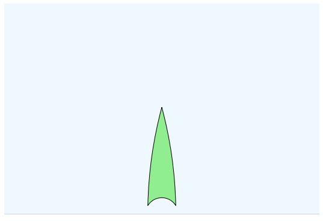

geometry_tools.drawtools
This submodule provides an interface between the
geometry_tools.projective and geometry_tools.hyperbolic submodules
and matplotlib.
The central classes in this module are ProjectiveDrawing and
HyperbolicDrawing. To create a matplotlib figure, instantiate one of
these classes and use the provided methods to add geometric objects to
the drawing.
from geometry_tools import hyperbolic, drawtools
from numpy import pi
hyp_drawing = drawtools.HyperbolicDrawing(model="halfplane")
triangle = hyperbolic.Polygon.regular_polygon(3, angle=pi / 6)
hyp_drawing.draw_plane()
hyp_drawing.draw_polygon(triangle, facecolor="lightgreen")
hyp_drawing.show()

1"""This submodule provides an interface between the 2`geometry_tools.projective` and `geometry_tools.hyperbolic` submodules 3and [matplotlib](https://matplotlib.org/). 4 5The central classes in this module are `ProjectiveDrawing` and 6`HyperbolicDrawing`. To create a matplotlib figure, instantiate one of 7these classes and use the provided methods to add geometric objects to 8the drawing. 9 10```python 11from geometry_tools import hyperbolic, drawtools 12from numpy import pi 13 14hyp_drawing = drawtools.HyperbolicDrawing(model="halfplane") 15triangle = hyperbolic.Polygon.regular_polygon(3, angle=pi / 6) 16 17hyp_drawing.draw_plane() 18hyp_drawing.draw_polygon(triangle, facecolor="lightgreen") 19 20hyp_drawing.show() 21``` 22 23 24 25 """ 26 27import copy 28 29import numpy as np 30 31import matplotlib.pyplot as plt 32from matplotlib.patches import Circle, Arc, PathPatch, Rectangle, Polygon, Annulus 33from matplotlib.collections import LineCollection, PolyCollection, EllipseCollection 34 35from mpl_toolkits.mplot3d.art3d import Line3DCollection, Poly3DCollection 36 37from matplotlib.transforms import Affine2D 38from matplotlib.path import Path 39 40from geometry_tools import hyperbolic, utils, projective, complex_projective 41from geometry_tools import GeometryError 42from geometry_tools.hyperbolic import Model 43 44#I played around with this a bit, but it's an eyeball test 45#TBH. Determines the radius at which we start approximating circular 46#arcs with straight lines. 47RADIUS_THRESHOLD = 80 48 49#how far apart points can be before we decide that we ordered the 50#polygon wrong 51DISTANCE_THRESHOLD = 1e-4 52 53#the default amount of "room" we leave outside the boundary of our model 54DRAW_NEIGHBORHOOD = 0.1 55 56#when drawing objects "to infinity", how far offscreen we draw them 57#(as a % of the width/height) 58OFFSCREEN_FACTOR = 0.1 59 60#this is a bit unpythonic since these are meant to be constants 61def default_model_limits(model): 62 if model == Model.POINCARE or model == Model.KLEIN: 63 return ((-1 - DRAW_NEIGHBORHOOD, 1 + DRAW_NEIGHBORHOOD), 64 (-1 - DRAW_NEIGHBORHOOD, 1 + DRAW_NEIGHBORHOOD)) 65 66 if model == Model.HALFSPACE: 67 return ((-6., 6.), 68 (-1 * DRAW_NEIGHBORHOOD, 8.)) 69 70class DrawingError(Exception): 71 """Thrown if we try and draw an object in a model which we haven't 72 implemented yet. 73 74 """ 75 pass 76 77class Drawing: 78 def __init__(self, figsize=8, 79 ax=None, 80 fig=None, 81 xlim=(-5., 5.), 82 ylim=(-5., 5.), 83 axis="off"): 84 85 if ax is None or fig is None: 86 fig, ax = plt.subplots(figsize=(figsize, figsize)) 87 88 self.xlim, self.ylim = xlim, ylim 89 90 self.width = self.xlim[1] - self.xlim[0] 91 self.height = self.ylim[1] - self.ylim[0] 92 93 self.ax, self.fig = ax, fig 94 95 plt.tight_layout() 96 self.ax.axis(axis) 97 self.ax.set_aspect("equal") 98 self.ax.set_xlim(self.xlim) 99 self.ax.set_ylim(self.ylim) 100 101 def view_diam(self): 102 return np.sqrt(self.width * self.width + self.height * self.height) 103 104 def view_ctr(self): 105 return np.array([(self.xlim[0] + self.xlim[1])/2, 106 (self.ylim[0] + self.ylim[1])/2]) 107 108 def set_transform(self, transform): 109 self.transform = transform.astype('float64') 110 111 def add_transform(self, transform): 112 self.transform = transform.astype('float64') @ self.transform 113 114 def precompose_transform(self, transform): 115 self.transform = self.transform @ transform.astype('float64') 116 117 def show(self): 118 plt.show() 119 120 121class ProjectiveDrawing(Drawing): 122 123 _LineCollection = LineCollection 124 _PolyCollection = PolyCollection 125 126 def __init__(self, transform=None, chart_index=0, **kwargs): 127 Drawing.__init__(self, **kwargs) 128 129 self.chart_index = chart_index 130 131 self.transform = projective.identity(2) 132 if transform is not None: 133 self.transform = transform 134 135 def preprocess_object(self, obj): 136 if obj.dimension != 2: 137 raise GeometryError( 138 ("Cannot draw a {}-dimensional object in 2-dimensional " 139 "projective space").format(obj.dimension) 140 ) 141 142 return self.transform @ obj.flatten_to_unit().astype('float64') 143 144 def draw_point(self, point, **kwargs): 145 pointlist = self.preprocess_object(point) 146 default_kwargs = { 147 "color" : "black", 148 "marker": "o", 149 "linestyle":"none" 150 } 151 for key, value in kwargs.items(): 152 default_kwargs[key] = value 153 154 x, y = pointlist.affine_coords(chart_index=self.chart_index).T 155 plt.plot(x, y, **default_kwargs) 156 157 def draw_curve(self, points, **kwargs): 158 pointlist = self.preprocess_object(points) 159 default_kwargs = { 160 "color" : "black", 161 } 162 for key, value in kwargs.items(): 163 default_kwargs[key] = value 164 165 x, y = pointlist.affine_coords(chart_index=self.chart_index).T 166 self.ax.plot(x, y, **default_kwargs) 167 168 def draw_proj_segment(self, segment, **kwargs): 169 seglist = self.preprocess_object(segment) 170 default_kwargs = { 171 "color":"black", 172 "linewidth":1 173 } 174 for key, value in kwargs.items(): 175 default_kwargs[key] = value 176 177 lines = self.__class__._LineCollection( 178 seglist.endpoint_affine_coords(chart_index=self.chart_index), 179 **default_kwargs) 180 self.ax.add_collection(lines) 181 182 def draw_line(self, line, **kwargs): 183 linelist = projective.PointPair(self.preprocess_object(line)) 184 185 default_kwargs = { 186 "color":"black", 187 "linewidth":1 188 } 189 for key, value in kwargs.items(): 190 default_kwargs[key] = value 191 192 coords = linelist.endpoint_affine_coords(chart_index=self.chart_index) 193 c1 = coords[..., 0, :] 194 c2 = coords[..., 1, :] 195 196 ndiff = utils.normalize(c2 - c1) 197 198 dummy_1 = c1 + self.view_diam() * ndiff 199 dummy_2 = c2 - self.view_diam() * ndiff 200 201 dummy_coords = np.stack([dummy_1, dummy_2], axis=-2) 202 203 lines = self.__class__._LineCollection(dummy_coords, **default_kwargs) 204 self.ax.add_collection(lines) 205 206 207 208 def draw_nonaff_polygon(self, polygon, **kwargs): 209 if len(polygon.proj_data) == 0: 210 return 211 212 # first, find the first index where we switch signs 213 sign_switch = utils.first_sign_switch(polygon.projective_coords()[..., 0]) 214 215 # roll the coordinates by the signs 216 coord_mat = polygon.projective_coords() 217 218 rows, cols = np.ogrid[:coord_mat.shape[0], :coord_mat.shape[1]] 219 cols = (cols + sign_switch[:, np.newaxis]) % coord_mat.shape[-2] 220 rolled_coords = coord_mat[rows, cols] 221 222 # find the index where signs switch back 223 second_switch = utils.first_sign_switch(rolled_coords[..., 0]) 224 225 # re-index polygon affine coordinates by first sign switch 226 rolled_polys = projective.Polygon(rolled_coords) 227 poly_affine = rolled_polys.affine_coords() 228 229 # find affine coordinates of sign-switch points 230 s1_v1 = poly_affine[..., -1, :] 231 s1_v2 = poly_affine[..., 0, :] 232 233 s2_v1 = np.take_along_axis(poly_affine, second_switch[:, np.newaxis, np.newaxis] - 1, axis=1 234 ).squeeze(axis=1) 235 s2_v2 = np.take_along_axis(poly_affine, second_switch[:, np.newaxis, np.newaxis], axis=1 236 ).squeeze(axis=1) 237 238 # compute normalized (affine) displacement vectors between 239 # endpoints of segments which cross infinity 240 disp_1 = s1_v2 - s1_v1 241 disp_2 = s2_v2 - s2_v1 242 243 n_disp_1 = utils.normalize(disp_1) 244 n_disp_2 = utils.normalize(disp_2) 245 246 # compute dummy vertex coordinates for segments which cross infinity. 247 # this could be DRYer. 248 dummy_p1v1 = s1_v2 + ( 249 n_disp_1 * (self.view_diam() + 250 np.linalg.norm(s1_v2 - self.view_ctr(), axis=-1))[:, np.newaxis] 251 ) 252 dummy_p2v1 = s1_v1 - ( 253 n_disp_1 * (self.view_diam() + 254 np.linalg.norm(s1_v1 - self.view_ctr(), axis=-1))[:, np.newaxis] 255 ) 256 257 dummy_p1v2 = s2_v1 - ( 258 n_disp_2 * (self.view_diam() + 259 np.linalg.norm(s2_v1 - self.view_ctr(), axis=-1))[:, np.newaxis] 260 ) 261 dummy_p2v2 = s2_v2 + ( 262 n_disp_2 * (self.view_diam() + 263 np.linalg.norm(s2_v2 - self.view_ctr(), axis=-1))[:, np.newaxis] 264 ) 265 266 dummy_coords_1 = np.stack([dummy_p1v2, dummy_p1v1], axis=-2) 267 dummy_coords_2 = np.stack([dummy_p2v1, dummy_p2v2], axis=-2) 268 269 270 # draw a pair of polygons for each non-affine polygon 271 for poly_coords, s_index, dc_1, dc_2 in zip( 272 poly_affine, second_switch, dummy_coords_1, dummy_coords_2): 273 274 p1 = Polygon(np.concatenate([poly_coords[:s_index], dc_1]), 275 **kwargs) 276 p2 = Polygon(np.concatenate([poly_coords[s_index:], dc_2]), 277 **kwargs) 278 self.ax.add_patch(p1) 279 self.ax.add_patch(p2) 280 281 282 283 def draw_polygon(self, polygon, assume_affine=True, **kwargs): 284 polylist = projective.Polygon( 285 self.preprocess_object(polygon) 286 ) 287 288 default_kwargs = { 289 "facecolor": "none", 290 "edgecolor": "black" 291 } 292 for key, value in kwargs.items(): 293 default_kwargs[key] = value 294 295 if assume_affine: 296 polys = self.__class__._PolyCollection(polylist.affine_coords( 297 chart_index=self.chart_index), **default_kwargs) 298 self.ax.add_collection(polys) 299 return 300 301 in_chart = polylist.in_standard_chart() 302 affine_polys = self.__class__._PolyCollection(polylist[in_chart].affine_coords( 303 chart_index=self.chart_index), **default_kwargs) 304 self.ax.add_collection(affine_polys) 305 306 self.draw_nonaff_polygon(polylist[~in_chart], **default_kwargs) 307 308class Drawing3D(Drawing): 309 def __init__(self, 310 ax=None, 311 fig=None, 312 xlim=(-5., 5.), 313 ylim=(-5., 5.), 314 zlim=(-5., 5.), 315 axis="off"): 316 317 if ax is None or fig is None: 318 fig = plt.figure() 319 ax = fig.add_subplot(projection="3d") 320 321 self.fig, self.ax = fig, ax 322 323 self.ax.axis(axis) 324 self.xlim, self.ylim, self.zlim = xlim, ylim, zlim 325 326 self.ax.set_xlim(xlim) 327 self.ax.set_ylim(ylim) 328 self.ax.set_zlim(zlim) 329 330 self.width = self.xlim[1] - self.xlim[0] 331 self.height = self.ylim[1] - self.ylim[0] 332 self.depth = self.zlim[1] - self.zlim[0] 333 334 def view_diam(self): 335 return np.sqrt( 336 self.width**2 + self.height**2 + self.depth**2 337 ) 338 339 def view_ctr(self): 340 return np.array( 341 (self.xlim[0] + self.xlim[1]) / 2, 342 (self.ylim[0] + self.ylim[1]) / 2, 343 (self.zlim[0] + self.zlim[1]) / 2 344 ) 345 346class ProjectiveDrawing3D(ProjectiveDrawing, Drawing3D): 347 _LineCollection = Line3DCollection 348 _PolyCollection = Poly3DCollection 349 350 def __init__(self, transform=None, chart_index=0, **kwargs): 351 Drawing3D.__init__(self, **kwargs) 352 353 self.chart_index = chart_index 354 self.transform = projective.identity(3) 355 356 if transform is not None: 357 self.transform = transform 358 359 def preprocess_object(self, obj): 360 if obj.dimension != 3: 361 raise GeometryError( 362 ("Cannot draw a {}-dimensional object in 3-dimensional " 363 "projective space").format(obj.dimension) 364 ) 365 return self.transform @ obj.flatten_to_unit().astype('float64') 366 367 def draw_point(self, point, **kwargs): 368 pointlist = self.preprocess_object(point) 369 default_kwargs = { 370 "color" : "black", 371 "marker": "o", 372 "linestyle":"none" 373 } 374 for key, value in kwargs.items(): 375 default_kwargs[key] = value 376 377 x, y, z = pointlist.affine_coords().T 378 self.ax.plot(x, y, z, **default_kwargs) 379 380 def draw_curve(self, points, **kwargs): 381 pointlist = self.preprocess_object(points) 382 default_kwargs = { 383 "color" : "black", 384 } 385 for key, value in kwargs.items(): 386 default_kwargs[key] = value 387 388 x, y, z = pointlist.affine_coords().T 389 self.ax.plot(x, y, z, **default_kwargs) 390 391 392class HyperbolicDrawing(Drawing): 393 def __init__(self, figsize=8, 394 ax=None, 395 fig=None, 396 model=Model.POINCARE, 397 xlim=None, 398 ylim=None, 399 transform=None, 400 axis="off"): 401 402 if ax is None or fig is None: 403 fig, ax = plt.subplots(figsize=(figsize, figsize)) 404 405 default_x, default_y = default_model_limits(model) 406 407 self.xlim, self.ylim = xlim, ylim 408 if xlim is None: 409 self.xlim = default_x 410 if ylim is None: 411 self.ylim = default_y 412 413 self.width = self.xlim[1] - self.xlim[0] 414 self.height = self.ylim[1] - self.ylim[0] 415 416 self.left_infinity = self.xlim[0] - OFFSCREEN_FACTOR * self.width 417 self.right_infinity = self.xlim[1] + OFFSCREEN_FACTOR * self.width 418 self.up_infinity = self.ylim[1] + OFFSCREEN_FACTOR * self.height 419 self.down_infinity = self.ylim[0] - OFFSCREEN_FACTOR * self.height 420 self.h_infinity = self.right_infinity - self.left_infinity 421 self.v_infinity = self.up_infinity - self.down_infinity 422 423 self.ax, self.fig = ax, fig 424 425 plt.tight_layout() 426 self.ax.axis(axis) 427 self.ax.set_aspect("equal") 428 self.ax.set_xlim(self.xlim) 429 self.ax.set_ylim(self.ylim) 430 431 self.model = model 432 433 self.transform = hyperbolic.identity(2).astype('float64') 434 435 if transform is not None: 436 self.transform = transform.astype('float64') 437 438 439 def preprocess_object(self, obj): 440 if obj.dimension != 2: 441 raise GeometryError( 442 ("Cannot draw a {}-dimensional object in 2-dimensional " 443 "hyperbolic space").format(obj.dimension) 444 ) 445 return self.transform @ obj.flatten_to_unit().astype('float64') 446 447 448 def draw_plane(self, **kwargs): 449 default_kwargs = { 450 "facecolor": "aliceblue", 451 "edgecolor": "lightgray", 452 "linewidth": 1, 453 "zorder": 0 454 } 455 for key, value in kwargs.items(): 456 default_kwargs[key] = value 457 458 if self.model == Model.POINCARE or self.model == Model.KLEIN: 459 plane = Circle((0., 0.), 1.0, **default_kwargs) 460 461 self.ax.add_patch(plane) 462 elif self.model == Model.HALFSPACE: 463 xmin, xmax = self.xlim 464 ymin, ymax = self.ylim 465 plane = Rectangle((self.left_infinity, 0.), 466 self.h_infinity, self.up_infinity, 467 **default_kwargs) 468 self.ax.add_patch(plane) 469 470 else: 471 raise DrawingError( 472 "Drawing in model '{}' is not implemented".format(self.model) 473 ) 474 475 def get_vertical_segment(self, endpts): 476 ordered_endpts = endpts[:] 477 if (np.isnan(endpts[0,0]) or 478 endpts[0, 0] < self.left_infinity or 479 endpts[0, 0] > self.right_infinity): 480 ordered_endpts = np.flip(endpts, axis=0) 481 482 if (np.isnan(ordered_endpts[1, 0]) or 483 ordered_endpts[1, 0] < self.left_infinity or 484 ordered_endpts[1, 0] > self.right_infinity): 485 486 ordered_endpts[1, 1] = self.up_infinity 487 488 ordered_endpts[1, 0] = ordered_endpts[0, 0] 489 490 return ordered_endpts 491 492 493 494 def draw_geodesic(self, segment, 495 radius_threshold=RADIUS_THRESHOLD, **kwargs): 496 seglist = self.preprocess_object(segment) 497 default_kwargs = { 498 "color":"black", 499 "linewidth":1 500 } 501 for key, value in kwargs.items(): 502 default_kwargs[key] = value 503 504 if self.model not in [Model.KLEIN, Model.POINCARE, Model.HALFSPACE]: 505 raise DrawingError( 506 "Drawing geodesics in model '{}' is not implemented".format( 507 self.model) 508 ) 509 510 if self.model == Model.KLEIN: 511 lines = LineCollection(seglist.endpoint_coords(self.model), 512 **default_kwargs) 513 self.ax.add_collection(lines) 514 return 515 516 centers, radii, thetas = seglist.circle_parameters(model=self.model, 517 degrees=True) 518 for center, radius, theta, segment in zip(centers, radii, 519 thetas, seglist): 520 if np.isnan(radius) or radius > radius_threshold: 521 arcpath = self.get_straight_arcpath(segment) 522 arc = PathPatch(arcpath, **default_kwargs) 523 self.ax.add_patch(arc) 524 continue 525 526 arc = Arc(center, radius * 2, radius * 2, 527 theta1=theta[0], theta2=theta[1], 528 **kwargs) 529 self.ax.add_patch(arc) 530 531 532 def draw_point(self, point, **kwargs): 533 pointlist = self.preprocess_object(point) 534 default_kwargs = { 535 "color" : "black", 536 "marker": "o", 537 "linestyle":"none" 538 } 539 for key, value in kwargs.items(): 540 default_kwargs[key] = value 541 542 x, y = pointlist.coords(self.model).T 543 plt.plot(x, y, **default_kwargs) 544 545 def get_circle_arcpath(self, center, radius, theta): 546 """Get a matplotlib path object for the circular arc representing this 547 geometric object. 548 549 """ 550 cx, cy = center 551 transform = Affine2D() 552 transform.scale(radius) 553 transform.translate(cx, cy) 554 return transform.transform_path(Path.arc(theta[0], theta[1])) 555 556 def get_straight_arcpath(self, segment): 557 endpts = segment.endpoint_coords(self.model) 558 559 if self.model == Model.POINCARE: 560 return Path(endpts, [Path.MOVETO, Path.LINETO]) 561 if self.model == Model.HALFSPACE: 562 v_endpts = self.get_vertical_segment(endpts) 563 return Path(v_endpts, [Path.MOVETO, Path.LINETO]) 564 565 def get_polygon_arcpath(self, polygon, 566 radius_threshold=RADIUS_THRESHOLD, 567 distance_threshold=DISTANCE_THRESHOLD): 568 vertices = np.zeros((0, 2)) 569 codes = np.zeros((0,)) 570 first_segment = True 571 572 polysegs = polygon.get_edges() 573 centers, radii, thetas = polysegs.circle_parameters(model=self.model) 574 575 for center, radius, theta, segment in zip(centers, radii, thetas, polysegs): 576 if not np.isnan(radius) and radius < radius_threshold: 577 g_path = self.get_circle_arcpath(center, radius, theta) 578 else: 579 g_path = self.get_straight_arcpath(segment) 580 581 g_verts = g_path.vertices 582 p1, p2 = segment.get_end_pair(as_points=True) 583 584 p1_opp_dist = np.linalg.norm(p1.coords(self.model) - g_verts[-1]) 585 p2_opp_dist = np.linalg.norm(p2.coords(self.model) - g_verts[0]) 586 if (p1_opp_dist < distance_threshold or 587 p2_opp_dist < distance_threshold): 588 g_verts = g_verts[::-1] 589 590 g_codes = copy.deepcopy(g_path.codes) 591 if not first_segment: 592 g_codes[0] = Path.LINETO 593 594 vertices = np.concatenate((vertices, g_verts), axis=-2) 595 codes = np.concatenate((codes, g_codes)) 596 first_segment = False 597 598 return Path(vertices, codes) 599 600 def draw_polygon(self, polygon, **kwargs): 601 default_kwargs = { 602 "facecolor": "none", 603 "edgecolor": "black" 604 } 605 for key, value in kwargs.items(): 606 default_kwargs[key] = value 607 608 polylist = self.preprocess_object(polygon) 609 610 if self.model == Model.KLEIN: 611 polys = PolyCollection(polylist.coords("klein"), **default_kwargs) 612 self.ax.add_collection(polys) 613 614 elif self.model == Model.POINCARE or self.model == Model.HALFSPACE: 615 for poly in polylist: 616 path = self.get_polygon_arcpath(poly) 617 self.ax.add_patch(PathPatch(path, **default_kwargs)) 618 else: 619 raise DrawingError( 620 "Drawing polygons in model '{}' is not implemented".format( 621 self.model) 622 ) 623 624 def draw_horosphere(self, horoball, **kwargs): 625 default_kwargs = { 626 "facecolor": "none", 627 "edgecolor": "black" 628 } 629 for key, value in kwargs.items(): 630 default_kwargs[key] = value 631 632 horolist = self.preprocess_object(horoball) 633 634 if self.model == Model.POINCARE or self.model == Model.HALFSPACE: 635 center, radius = horolist.sphere_parameters(model=self.model) 636 637 good_indices = ((radius < RADIUS_THRESHOLD) & 638 ~np.isnan(radius) & 639 ~(np.isnan(center).any(axis=-1))) 640 641 circle_ctrs = center[good_indices] 642 circle_radii = radius[good_indices] 643 644 if len(circle_ctrs) > 0: 645 self.ax.add_collection( 646 EllipseCollection(circle_radii * 2, circle_radii * 2, 647 0, units="xy", offsets=circle_ctrs, 648 transOffset=self.ax.transData, 649 **default_kwargs) 650 ) 651 652 if self.model == Model.HALFSPACE: 653 for horoball in horolist[~good_indices]: 654 height = horoball.ref_coords(self.model)[1] 655 h_rect = Rectangle((self.left_infinity, height), 656 self.h_infinity, 657 self.up_infinity - height, 658 **default_kwargs) 659 660 self.ax.add_patch(h_rect) 661 else: 662 raise DrawingError( 663 "Drawing horospheres in model '{}' is not implemented.".format( 664 self.model) 665 ) 666 667 def draw_horoarc(self, horoarc, **kwargs): 668 default_kwargs = { 669 "facecolor": "none", 670 "edgecolor": "black" 671 } 672 for key, value in kwargs.items(): 673 default_kwargs[key] = value 674 675 if self.model != Model.POINCARE and self.model != Model.HALFSPACE: 676 raise DrawingError( 677 "Drawing horoarcs in model '{}' is not implemented.".format( 678 self.model) 679 ) 680 681 horolist = self.preprocess_object(horoarc) 682 endpts = horolist.endpoint_coords(model=self.model) 683 centers, radii, thetas = horolist.circle_parameters(model=self.model) 684 685 for center, radius, theta, endpt in zip(centers, radii, thetas, endpts): 686 if np.isnan(radius) or radius > RADIUS_THRESHOLD: 687 path = Path(endpt, [Path.MOVETO, Path.LINETO]) 688 pathpatch = PathPatch(path, **default_kwargs) 689 self.ax.add_patch(pathpatch) 690 else: 691 arc = Arc(center, radius * 2, radius * 2, 692 theta1=theta[0], theta2=theta[1], 693 **default_kwargs) 694 self.ax.add_patch(arc) 695 696 def draw_boundary_arc(self, boundary_arc, **kwargs): 697 default_kwargs = { 698 "edgecolor": "black", 699 "linewidth": 3 700 } 701 for key, value in kwargs.items(): 702 default_kwargs[key] = value 703 704 arclist = self.transform @ self.preprocess_object(boundary_arc) 705 706 if self.model == Model.POINCARE or self.model == Model.KLEIN: 707 centers, radii, thetas = arclist.circle_parameters(model=self.model) 708 for center, radius, theta in zip(centers, radii, thetas): 709 arc = Arc(center, radius * 2, radius * 2, 710 theta1=theta[0], theta2=theta[1], 711 **default_kwargs) 712 713 self.ax.add_patch(arc) 714 715 elif self.model == Model.HALFSPACE: 716 endpoints = arclist.endpoint_coords(self.model, ordered=True) 717 718 endpoints[..., 1] = 0. 719 endpoints[np.isnan(endpoints)[..., 0], 0] = np.inf 720 721 # first, draw all the lines where we go left to right 722 leftright = (endpoints[..., 0, 0] < endpoints[..., 1, 0]) 723 leftright_endpts = endpoints[leftright] 724 725 leftright_arcs = LineCollection(leftright_endpts, **default_kwargs) 726 self.ax.add_collection(leftright_arcs) 727 728 # then, draw all the lines that wrap around infinity 729 730 infty_right = np.array([self.right_infinity, 0.]) 731 infty_left = np.array([self.left_infinity, 0.]) 732 733 to_right = np.broadcast_to(infty_right, endpoints[~leftright, 0].shape) 734 left_to = np.broadcast_to(infty_left, endpoints[~leftright, 1].shape) 735 736 coords1 = np.stack([endpoints[~leftright, 0], to_right], axis=-2) 737 coords2 = np.stack([endpoints[~leftright, 1], left_to], axis=-2) 738 739 right_arcs = LineCollection(coords1, **default_kwargs) 740 left_arcs = LineCollection(coords2, **default_kwargs) 741 742 self.ax.add_collection(right_arcs) 743 self.ax.add_collection(left_arcs) 744 745 else: 746 raise DrawingError( 747 "Drawing boundary arcs in model '{}' is not implemented.".format( 748 self.model) 749 ) 750 751class CP1Drawing(Drawing): 752 def __init__(self, transform=None, **kwargs): 753 Drawing.__init__(self, **kwargs) 754 755 self.transform = projective.identity(1).astype('float64') 756 if transform is not None: 757 self.transform = transform.astype('float64') 758 759 def preprocess_object(self, obj): 760 if obj.dimension != 1: 761 raise GeometryError( 762 ("Cannot draw a {}-dimensional object in 1-dimensional " 763 "complex projective space").format(obj.dimension) 764 ) 765 return self.transform @ obj.flatten_to_unit().astype('float64') 766 767 768 def draw_disk(self, disks, draw_nonaffine=True, 769 **kwargs): 770 default_kwargs = { 771 "facecolor": "none", 772 "edgecolor": "black" 773 } 774 for key, value in kwargs.items(): 775 default_kwargs[key] = value 776 777 disklist = self.preprocess_object(disks) 778 779 nonaff_in_collection = (draw_nonaffine and 780 default_kwargs["facecolor"].lower() == "none") 781 782 if nonaff_in_collection: 783 collection_disks = disklist 784 else: 785 aff_disks = disklist.center_inside() 786 collection_disks = disklist[aff_disks] 787 extra_disks = disklist[~aff_disks] 788 789 center, radius = collection_disks.circle_parameters() 790 circles = EllipseCollection(radius * 2, radius * 2, 791 0, units="xy", offsets=center, 792 transOffset=self.ax.transData, 793 **default_kwargs) 794 795 self.ax.add_collection(circles) 796 797 if draw_nonaffine and not nonaff_in_collection: 798 ext_center, ext_radius = extra_disks.circle_parameters() 799 ann_outer_rad = np.linalg.norm(ext_center - self.view_ctr(), 800 axis=-1) + self.view_diam() 801 802 for center, inrad, outrad in zip(ext_center, ext_radius, ann_outer_rad): 803 annulus = Annulus(center, outrad, outrad - inrad, **default_kwargs) 804 self.ax.add_patch(annulus) 805 806 def draw_point(self, point, **kwargs): 807 pointlist = self.preprocess_object(point) 808 default_kwargs = { 809 "color" : "black", 810 "marker": "o", 811 "linestyle":"none" 812 } 813 for key, value in kwargs.items(): 814 default_kwargs[key] = value 815 816 x, y = pointlist.real_affine_coords().T 817 plt.plot(x, y, **default_kwargs)
RADIUS_THRESHOLD =
80
DISTANCE_THRESHOLD =
0.0001
DRAW_NEIGHBORHOOD =
0.1
OFFSCREEN_FACTOR =
0.1
def
default_model_limits(model):
class
DrawingError(builtins.Exception):
71class DrawingError(Exception): 72 """Thrown if we try and draw an object in a model which we haven't 73 implemented yet. 74 75 """ 76 pass
Thrown if we try and draw an object in a model which we haven't implemented yet.
Inherited Members
- builtins.Exception
- Exception
- builtins.BaseException
- with_traceback
- add_note
- args
class
Drawing:
78class Drawing: 79 def __init__(self, figsize=8, 80 ax=None, 81 fig=None, 82 xlim=(-5., 5.), 83 ylim=(-5., 5.), 84 axis="off"): 85 86 if ax is None or fig is None: 87 fig, ax = plt.subplots(figsize=(figsize, figsize)) 88 89 self.xlim, self.ylim = xlim, ylim 90 91 self.width = self.xlim[1] - self.xlim[0] 92 self.height = self.ylim[1] - self.ylim[0] 93 94 self.ax, self.fig = ax, fig 95 96 plt.tight_layout() 97 self.ax.axis(axis) 98 self.ax.set_aspect("equal") 99 self.ax.set_xlim(self.xlim) 100 self.ax.set_ylim(self.ylim) 101 102 def view_diam(self): 103 return np.sqrt(self.width * self.width + self.height * self.height) 104 105 def view_ctr(self): 106 return np.array([(self.xlim[0] + self.xlim[1])/2, 107 (self.ylim[0] + self.ylim[1])/2]) 108 109 def set_transform(self, transform): 110 self.transform = transform.astype('float64') 111 112 def add_transform(self, transform): 113 self.transform = transform.astype('float64') @ self.transform 114 115 def precompose_transform(self, transform): 116 self.transform = self.transform @ transform.astype('float64') 117 118 def show(self): 119 plt.show()
Drawing( figsize=8, ax=None, fig=None, xlim=(-5.0, 5.0), ylim=(-5.0, 5.0), axis='off')
79 def __init__(self, figsize=8, 80 ax=None, 81 fig=None, 82 xlim=(-5., 5.), 83 ylim=(-5., 5.), 84 axis="off"): 85 86 if ax is None or fig is None: 87 fig, ax = plt.subplots(figsize=(figsize, figsize)) 88 89 self.xlim, self.ylim = xlim, ylim 90 91 self.width = self.xlim[1] - self.xlim[0] 92 self.height = self.ylim[1] - self.ylim[0] 93 94 self.ax, self.fig = ax, fig 95 96 plt.tight_layout() 97 self.ax.axis(axis) 98 self.ax.set_aspect("equal") 99 self.ax.set_xlim(self.xlim) 100 self.ax.set_ylim(self.ylim)
122class ProjectiveDrawing(Drawing): 123 124 _LineCollection = LineCollection 125 _PolyCollection = PolyCollection 126 127 def __init__(self, transform=None, chart_index=0, **kwargs): 128 Drawing.__init__(self, **kwargs) 129 130 self.chart_index = chart_index 131 132 self.transform = projective.identity(2) 133 if transform is not None: 134 self.transform = transform 135 136 def preprocess_object(self, obj): 137 if obj.dimension != 2: 138 raise GeometryError( 139 ("Cannot draw a {}-dimensional object in 2-dimensional " 140 "projective space").format(obj.dimension) 141 ) 142 143 return self.transform @ obj.flatten_to_unit().astype('float64') 144 145 def draw_point(self, point, **kwargs): 146 pointlist = self.preprocess_object(point) 147 default_kwargs = { 148 "color" : "black", 149 "marker": "o", 150 "linestyle":"none" 151 } 152 for key, value in kwargs.items(): 153 default_kwargs[key] = value 154 155 x, y = pointlist.affine_coords(chart_index=self.chart_index).T 156 plt.plot(x, y, **default_kwargs) 157 158 def draw_curve(self, points, **kwargs): 159 pointlist = self.preprocess_object(points) 160 default_kwargs = { 161 "color" : "black", 162 } 163 for key, value in kwargs.items(): 164 default_kwargs[key] = value 165 166 x, y = pointlist.affine_coords(chart_index=self.chart_index).T 167 self.ax.plot(x, y, **default_kwargs) 168 169 def draw_proj_segment(self, segment, **kwargs): 170 seglist = self.preprocess_object(segment) 171 default_kwargs = { 172 "color":"black", 173 "linewidth":1 174 } 175 for key, value in kwargs.items(): 176 default_kwargs[key] = value 177 178 lines = self.__class__._LineCollection( 179 seglist.endpoint_affine_coords(chart_index=self.chart_index), 180 **default_kwargs) 181 self.ax.add_collection(lines) 182 183 def draw_line(self, line, **kwargs): 184 linelist = projective.PointPair(self.preprocess_object(line)) 185 186 default_kwargs = { 187 "color":"black", 188 "linewidth":1 189 } 190 for key, value in kwargs.items(): 191 default_kwargs[key] = value 192 193 coords = linelist.endpoint_affine_coords(chart_index=self.chart_index) 194 c1 = coords[..., 0, :] 195 c2 = coords[..., 1, :] 196 197 ndiff = utils.normalize(c2 - c1) 198 199 dummy_1 = c1 + self.view_diam() * ndiff 200 dummy_2 = c2 - self.view_diam() * ndiff 201 202 dummy_coords = np.stack([dummy_1, dummy_2], axis=-2) 203 204 lines = self.__class__._LineCollection(dummy_coords, **default_kwargs) 205 self.ax.add_collection(lines) 206 207 208 209 def draw_nonaff_polygon(self, polygon, **kwargs): 210 if len(polygon.proj_data) == 0: 211 return 212 213 # first, find the first index where we switch signs 214 sign_switch = utils.first_sign_switch(polygon.projective_coords()[..., 0]) 215 216 # roll the coordinates by the signs 217 coord_mat = polygon.projective_coords() 218 219 rows, cols = np.ogrid[:coord_mat.shape[0], :coord_mat.shape[1]] 220 cols = (cols + sign_switch[:, np.newaxis]) % coord_mat.shape[-2] 221 rolled_coords = coord_mat[rows, cols] 222 223 # find the index where signs switch back 224 second_switch = utils.first_sign_switch(rolled_coords[..., 0]) 225 226 # re-index polygon affine coordinates by first sign switch 227 rolled_polys = projective.Polygon(rolled_coords) 228 poly_affine = rolled_polys.affine_coords() 229 230 # find affine coordinates of sign-switch points 231 s1_v1 = poly_affine[..., -1, :] 232 s1_v2 = poly_affine[..., 0, :] 233 234 s2_v1 = np.take_along_axis(poly_affine, second_switch[:, np.newaxis, np.newaxis] - 1, axis=1 235 ).squeeze(axis=1) 236 s2_v2 = np.take_along_axis(poly_affine, second_switch[:, np.newaxis, np.newaxis], axis=1 237 ).squeeze(axis=1) 238 239 # compute normalized (affine) displacement vectors between 240 # endpoints of segments which cross infinity 241 disp_1 = s1_v2 - s1_v1 242 disp_2 = s2_v2 - s2_v1 243 244 n_disp_1 = utils.normalize(disp_1) 245 n_disp_2 = utils.normalize(disp_2) 246 247 # compute dummy vertex coordinates for segments which cross infinity. 248 # this could be DRYer. 249 dummy_p1v1 = s1_v2 + ( 250 n_disp_1 * (self.view_diam() + 251 np.linalg.norm(s1_v2 - self.view_ctr(), axis=-1))[:, np.newaxis] 252 ) 253 dummy_p2v1 = s1_v1 - ( 254 n_disp_1 * (self.view_diam() + 255 np.linalg.norm(s1_v1 - self.view_ctr(), axis=-1))[:, np.newaxis] 256 ) 257 258 dummy_p1v2 = s2_v1 - ( 259 n_disp_2 * (self.view_diam() + 260 np.linalg.norm(s2_v1 - self.view_ctr(), axis=-1))[:, np.newaxis] 261 ) 262 dummy_p2v2 = s2_v2 + ( 263 n_disp_2 * (self.view_diam() + 264 np.linalg.norm(s2_v2 - self.view_ctr(), axis=-1))[:, np.newaxis] 265 ) 266 267 dummy_coords_1 = np.stack([dummy_p1v2, dummy_p1v1], axis=-2) 268 dummy_coords_2 = np.stack([dummy_p2v1, dummy_p2v2], axis=-2) 269 270 271 # draw a pair of polygons for each non-affine polygon 272 for poly_coords, s_index, dc_1, dc_2 in zip( 273 poly_affine, second_switch, dummy_coords_1, dummy_coords_2): 274 275 p1 = Polygon(np.concatenate([poly_coords[:s_index], dc_1]), 276 **kwargs) 277 p2 = Polygon(np.concatenate([poly_coords[s_index:], dc_2]), 278 **kwargs) 279 self.ax.add_patch(p1) 280 self.ax.add_patch(p2) 281 282 283 284 def draw_polygon(self, polygon, assume_affine=True, **kwargs): 285 polylist = projective.Polygon( 286 self.preprocess_object(polygon) 287 ) 288 289 default_kwargs = { 290 "facecolor": "none", 291 "edgecolor": "black" 292 } 293 for key, value in kwargs.items(): 294 default_kwargs[key] = value 295 296 if assume_affine: 297 polys = self.__class__._PolyCollection(polylist.affine_coords( 298 chart_index=self.chart_index), **default_kwargs) 299 self.ax.add_collection(polys) 300 return 301 302 in_chart = polylist.in_standard_chart() 303 affine_polys = self.__class__._PolyCollection(polylist[in_chart].affine_coords( 304 chart_index=self.chart_index), **default_kwargs) 305 self.ax.add_collection(affine_polys) 306 307 self.draw_nonaff_polygon(polylist[~in_chart], **default_kwargs)
def
draw_point(self, point, **kwargs):
145 def draw_point(self, point, **kwargs): 146 pointlist = self.preprocess_object(point) 147 default_kwargs = { 148 "color" : "black", 149 "marker": "o", 150 "linestyle":"none" 151 } 152 for key, value in kwargs.items(): 153 default_kwargs[key] = value 154 155 x, y = pointlist.affine_coords(chart_index=self.chart_index).T 156 plt.plot(x, y, **default_kwargs)
def
draw_curve(self, points, **kwargs):
158 def draw_curve(self, points, **kwargs): 159 pointlist = self.preprocess_object(points) 160 default_kwargs = { 161 "color" : "black", 162 } 163 for key, value in kwargs.items(): 164 default_kwargs[key] = value 165 166 x, y = pointlist.affine_coords(chart_index=self.chart_index).T 167 self.ax.plot(x, y, **default_kwargs)
def
draw_proj_segment(self, segment, **kwargs):
169 def draw_proj_segment(self, segment, **kwargs): 170 seglist = self.preprocess_object(segment) 171 default_kwargs = { 172 "color":"black", 173 "linewidth":1 174 } 175 for key, value in kwargs.items(): 176 default_kwargs[key] = value 177 178 lines = self.__class__._LineCollection( 179 seglist.endpoint_affine_coords(chart_index=self.chart_index), 180 **default_kwargs) 181 self.ax.add_collection(lines)
def
draw_line(self, line, **kwargs):
183 def draw_line(self, line, **kwargs): 184 linelist = projective.PointPair(self.preprocess_object(line)) 185 186 default_kwargs = { 187 "color":"black", 188 "linewidth":1 189 } 190 for key, value in kwargs.items(): 191 default_kwargs[key] = value 192 193 coords = linelist.endpoint_affine_coords(chart_index=self.chart_index) 194 c1 = coords[..., 0, :] 195 c2 = coords[..., 1, :] 196 197 ndiff = utils.normalize(c2 - c1) 198 199 dummy_1 = c1 + self.view_diam() * ndiff 200 dummy_2 = c2 - self.view_diam() * ndiff 201 202 dummy_coords = np.stack([dummy_1, dummy_2], axis=-2) 203 204 lines = self.__class__._LineCollection(dummy_coords, **default_kwargs) 205 self.ax.add_collection(lines)
def
draw_nonaff_polygon(self, polygon, **kwargs):
209 def draw_nonaff_polygon(self, polygon, **kwargs): 210 if len(polygon.proj_data) == 0: 211 return 212 213 # first, find the first index where we switch signs 214 sign_switch = utils.first_sign_switch(polygon.projective_coords()[..., 0]) 215 216 # roll the coordinates by the signs 217 coord_mat = polygon.projective_coords() 218 219 rows, cols = np.ogrid[:coord_mat.shape[0], :coord_mat.shape[1]] 220 cols = (cols + sign_switch[:, np.newaxis]) % coord_mat.shape[-2] 221 rolled_coords = coord_mat[rows, cols] 222 223 # find the index where signs switch back 224 second_switch = utils.first_sign_switch(rolled_coords[..., 0]) 225 226 # re-index polygon affine coordinates by first sign switch 227 rolled_polys = projective.Polygon(rolled_coords) 228 poly_affine = rolled_polys.affine_coords() 229 230 # find affine coordinates of sign-switch points 231 s1_v1 = poly_affine[..., -1, :] 232 s1_v2 = poly_affine[..., 0, :] 233 234 s2_v1 = np.take_along_axis(poly_affine, second_switch[:, np.newaxis, np.newaxis] - 1, axis=1 235 ).squeeze(axis=1) 236 s2_v2 = np.take_along_axis(poly_affine, second_switch[:, np.newaxis, np.newaxis], axis=1 237 ).squeeze(axis=1) 238 239 # compute normalized (affine) displacement vectors between 240 # endpoints of segments which cross infinity 241 disp_1 = s1_v2 - s1_v1 242 disp_2 = s2_v2 - s2_v1 243 244 n_disp_1 = utils.normalize(disp_1) 245 n_disp_2 = utils.normalize(disp_2) 246 247 # compute dummy vertex coordinates for segments which cross infinity. 248 # this could be DRYer. 249 dummy_p1v1 = s1_v2 + ( 250 n_disp_1 * (self.view_diam() + 251 np.linalg.norm(s1_v2 - self.view_ctr(), axis=-1))[:, np.newaxis] 252 ) 253 dummy_p2v1 = s1_v1 - ( 254 n_disp_1 * (self.view_diam() + 255 np.linalg.norm(s1_v1 - self.view_ctr(), axis=-1))[:, np.newaxis] 256 ) 257 258 dummy_p1v2 = s2_v1 - ( 259 n_disp_2 * (self.view_diam() + 260 np.linalg.norm(s2_v1 - self.view_ctr(), axis=-1))[:, np.newaxis] 261 ) 262 dummy_p2v2 = s2_v2 + ( 263 n_disp_2 * (self.view_diam() + 264 np.linalg.norm(s2_v2 - self.view_ctr(), axis=-1))[:, np.newaxis] 265 ) 266 267 dummy_coords_1 = np.stack([dummy_p1v2, dummy_p1v1], axis=-2) 268 dummy_coords_2 = np.stack([dummy_p2v1, dummy_p2v2], axis=-2) 269 270 271 # draw a pair of polygons for each non-affine polygon 272 for poly_coords, s_index, dc_1, dc_2 in zip( 273 poly_affine, second_switch, dummy_coords_1, dummy_coords_2): 274 275 p1 = Polygon(np.concatenate([poly_coords[:s_index], dc_1]), 276 **kwargs) 277 p2 = Polygon(np.concatenate([poly_coords[s_index:], dc_2]), 278 **kwargs) 279 self.ax.add_patch(p1) 280 self.ax.add_patch(p2)
def
draw_polygon(self, polygon, assume_affine=True, **kwargs):
284 def draw_polygon(self, polygon, assume_affine=True, **kwargs): 285 polylist = projective.Polygon( 286 self.preprocess_object(polygon) 287 ) 288 289 default_kwargs = { 290 "facecolor": "none", 291 "edgecolor": "black" 292 } 293 for key, value in kwargs.items(): 294 default_kwargs[key] = value 295 296 if assume_affine: 297 polys = self.__class__._PolyCollection(polylist.affine_coords( 298 chart_index=self.chart_index), **default_kwargs) 299 self.ax.add_collection(polys) 300 return 301 302 in_chart = polylist.in_standard_chart() 303 affine_polys = self.__class__._PolyCollection(polylist[in_chart].affine_coords( 304 chart_index=self.chart_index), **default_kwargs) 305 self.ax.add_collection(affine_polys) 306 307 self.draw_nonaff_polygon(polylist[~in_chart], **default_kwargs)
Inherited Members
309class Drawing3D(Drawing): 310 def __init__(self, 311 ax=None, 312 fig=None, 313 xlim=(-5., 5.), 314 ylim=(-5., 5.), 315 zlim=(-5., 5.), 316 axis="off"): 317 318 if ax is None or fig is None: 319 fig = plt.figure() 320 ax = fig.add_subplot(projection="3d") 321 322 self.fig, self.ax = fig, ax 323 324 self.ax.axis(axis) 325 self.xlim, self.ylim, self.zlim = xlim, ylim, zlim 326 327 self.ax.set_xlim(xlim) 328 self.ax.set_ylim(ylim) 329 self.ax.set_zlim(zlim) 330 331 self.width = self.xlim[1] - self.xlim[0] 332 self.height = self.ylim[1] - self.ylim[0] 333 self.depth = self.zlim[1] - self.zlim[0] 334 335 def view_diam(self): 336 return np.sqrt( 337 self.width**2 + self.height**2 + self.depth**2 338 ) 339 340 def view_ctr(self): 341 return np.array( 342 (self.xlim[0] + self.xlim[1]) / 2, 343 (self.ylim[0] + self.ylim[1]) / 2, 344 (self.zlim[0] + self.zlim[1]) / 2 345 )
Drawing3D( ax=None, fig=None, xlim=(-5.0, 5.0), ylim=(-5.0, 5.0), zlim=(-5.0, 5.0), axis='off')
310 def __init__(self, 311 ax=None, 312 fig=None, 313 xlim=(-5., 5.), 314 ylim=(-5., 5.), 315 zlim=(-5., 5.), 316 axis="off"): 317 318 if ax is None or fig is None: 319 fig = plt.figure() 320 ax = fig.add_subplot(projection="3d") 321 322 self.fig, self.ax = fig, ax 323 324 self.ax.axis(axis) 325 self.xlim, self.ylim, self.zlim = xlim, ylim, zlim 326 327 self.ax.set_xlim(xlim) 328 self.ax.set_ylim(ylim) 329 self.ax.set_zlim(zlim) 330 331 self.width = self.xlim[1] - self.xlim[0] 332 self.height = self.ylim[1] - self.ylim[0] 333 self.depth = self.zlim[1] - self.zlim[0]
Inherited Members
347class ProjectiveDrawing3D(ProjectiveDrawing, Drawing3D): 348 _LineCollection = Line3DCollection 349 _PolyCollection = Poly3DCollection 350 351 def __init__(self, transform=None, chart_index=0, **kwargs): 352 Drawing3D.__init__(self, **kwargs) 353 354 self.chart_index = chart_index 355 self.transform = projective.identity(3) 356 357 if transform is not None: 358 self.transform = transform 359 360 def preprocess_object(self, obj): 361 if obj.dimension != 3: 362 raise GeometryError( 363 ("Cannot draw a {}-dimensional object in 3-dimensional " 364 "projective space").format(obj.dimension) 365 ) 366 return self.transform @ obj.flatten_to_unit().astype('float64') 367 368 def draw_point(self, point, **kwargs): 369 pointlist = self.preprocess_object(point) 370 default_kwargs = { 371 "color" : "black", 372 "marker": "o", 373 "linestyle":"none" 374 } 375 for key, value in kwargs.items(): 376 default_kwargs[key] = value 377 378 x, y, z = pointlist.affine_coords().T 379 self.ax.plot(x, y, z, **default_kwargs) 380 381 def draw_curve(self, points, **kwargs): 382 pointlist = self.preprocess_object(points) 383 default_kwargs = { 384 "color" : "black", 385 } 386 for key, value in kwargs.items(): 387 default_kwargs[key] = value 388 389 x, y, z = pointlist.affine_coords().T 390 self.ax.plot(x, y, z, **default_kwargs)
def
draw_point(self, point, **kwargs):
368 def draw_point(self, point, **kwargs): 369 pointlist = self.preprocess_object(point) 370 default_kwargs = { 371 "color" : "black", 372 "marker": "o", 373 "linestyle":"none" 374 } 375 for key, value in kwargs.items(): 376 default_kwargs[key] = value 377 378 x, y, z = pointlist.affine_coords().T 379 self.ax.plot(x, y, z, **default_kwargs)
def
draw_curve(self, points, **kwargs):
381 def draw_curve(self, points, **kwargs): 382 pointlist = self.preprocess_object(points) 383 default_kwargs = { 384 "color" : "black", 385 } 386 for key, value in kwargs.items(): 387 default_kwargs[key] = value 388 389 x, y, z = pointlist.affine_coords().T 390 self.ax.plot(x, y, z, **default_kwargs)
393class HyperbolicDrawing(Drawing): 394 def __init__(self, figsize=8, 395 ax=None, 396 fig=None, 397 model=Model.POINCARE, 398 xlim=None, 399 ylim=None, 400 transform=None, 401 axis="off"): 402 403 if ax is None or fig is None: 404 fig, ax = plt.subplots(figsize=(figsize, figsize)) 405 406 default_x, default_y = default_model_limits(model) 407 408 self.xlim, self.ylim = xlim, ylim 409 if xlim is None: 410 self.xlim = default_x 411 if ylim is None: 412 self.ylim = default_y 413 414 self.width = self.xlim[1] - self.xlim[0] 415 self.height = self.ylim[1] - self.ylim[0] 416 417 self.left_infinity = self.xlim[0] - OFFSCREEN_FACTOR * self.width 418 self.right_infinity = self.xlim[1] + OFFSCREEN_FACTOR * self.width 419 self.up_infinity = self.ylim[1] + OFFSCREEN_FACTOR * self.height 420 self.down_infinity = self.ylim[0] - OFFSCREEN_FACTOR * self.height 421 self.h_infinity = self.right_infinity - self.left_infinity 422 self.v_infinity = self.up_infinity - self.down_infinity 423 424 self.ax, self.fig = ax, fig 425 426 plt.tight_layout() 427 self.ax.axis(axis) 428 self.ax.set_aspect("equal") 429 self.ax.set_xlim(self.xlim) 430 self.ax.set_ylim(self.ylim) 431 432 self.model = model 433 434 self.transform = hyperbolic.identity(2).astype('float64') 435 436 if transform is not None: 437 self.transform = transform.astype('float64') 438 439 440 def preprocess_object(self, obj): 441 if obj.dimension != 2: 442 raise GeometryError( 443 ("Cannot draw a {}-dimensional object in 2-dimensional " 444 "hyperbolic space").format(obj.dimension) 445 ) 446 return self.transform @ obj.flatten_to_unit().astype('float64') 447 448 449 def draw_plane(self, **kwargs): 450 default_kwargs = { 451 "facecolor": "aliceblue", 452 "edgecolor": "lightgray", 453 "linewidth": 1, 454 "zorder": 0 455 } 456 for key, value in kwargs.items(): 457 default_kwargs[key] = value 458 459 if self.model == Model.POINCARE or self.model == Model.KLEIN: 460 plane = Circle((0., 0.), 1.0, **default_kwargs) 461 462 self.ax.add_patch(plane) 463 elif self.model == Model.HALFSPACE: 464 xmin, xmax = self.xlim 465 ymin, ymax = self.ylim 466 plane = Rectangle((self.left_infinity, 0.), 467 self.h_infinity, self.up_infinity, 468 **default_kwargs) 469 self.ax.add_patch(plane) 470 471 else: 472 raise DrawingError( 473 "Drawing in model '{}' is not implemented".format(self.model) 474 ) 475 476 def get_vertical_segment(self, endpts): 477 ordered_endpts = endpts[:] 478 if (np.isnan(endpts[0,0]) or 479 endpts[0, 0] < self.left_infinity or 480 endpts[0, 0] > self.right_infinity): 481 ordered_endpts = np.flip(endpts, axis=0) 482 483 if (np.isnan(ordered_endpts[1, 0]) or 484 ordered_endpts[1, 0] < self.left_infinity or 485 ordered_endpts[1, 0] > self.right_infinity): 486 487 ordered_endpts[1, 1] = self.up_infinity 488 489 ordered_endpts[1, 0] = ordered_endpts[0, 0] 490 491 return ordered_endpts 492 493 494 495 def draw_geodesic(self, segment, 496 radius_threshold=RADIUS_THRESHOLD, **kwargs): 497 seglist = self.preprocess_object(segment) 498 default_kwargs = { 499 "color":"black", 500 "linewidth":1 501 } 502 for key, value in kwargs.items(): 503 default_kwargs[key] = value 504 505 if self.model not in [Model.KLEIN, Model.POINCARE, Model.HALFSPACE]: 506 raise DrawingError( 507 "Drawing geodesics in model '{}' is not implemented".format( 508 self.model) 509 ) 510 511 if self.model == Model.KLEIN: 512 lines = LineCollection(seglist.endpoint_coords(self.model), 513 **default_kwargs) 514 self.ax.add_collection(lines) 515 return 516 517 centers, radii, thetas = seglist.circle_parameters(model=self.model, 518 degrees=True) 519 for center, radius, theta, segment in zip(centers, radii, 520 thetas, seglist): 521 if np.isnan(radius) or radius > radius_threshold: 522 arcpath = self.get_straight_arcpath(segment) 523 arc = PathPatch(arcpath, **default_kwargs) 524 self.ax.add_patch(arc) 525 continue 526 527 arc = Arc(center, radius * 2, radius * 2, 528 theta1=theta[0], theta2=theta[1], 529 **kwargs) 530 self.ax.add_patch(arc) 531 532 533 def draw_point(self, point, **kwargs): 534 pointlist = self.preprocess_object(point) 535 default_kwargs = { 536 "color" : "black", 537 "marker": "o", 538 "linestyle":"none" 539 } 540 for key, value in kwargs.items(): 541 default_kwargs[key] = value 542 543 x, y = pointlist.coords(self.model).T 544 plt.plot(x, y, **default_kwargs) 545 546 def get_circle_arcpath(self, center, radius, theta): 547 """Get a matplotlib path object for the circular arc representing this 548 geometric object. 549 550 """ 551 cx, cy = center 552 transform = Affine2D() 553 transform.scale(radius) 554 transform.translate(cx, cy) 555 return transform.transform_path(Path.arc(theta[0], theta[1])) 556 557 def get_straight_arcpath(self, segment): 558 endpts = segment.endpoint_coords(self.model) 559 560 if self.model == Model.POINCARE: 561 return Path(endpts, [Path.MOVETO, Path.LINETO]) 562 if self.model == Model.HALFSPACE: 563 v_endpts = self.get_vertical_segment(endpts) 564 return Path(v_endpts, [Path.MOVETO, Path.LINETO]) 565 566 def get_polygon_arcpath(self, polygon, 567 radius_threshold=RADIUS_THRESHOLD, 568 distance_threshold=DISTANCE_THRESHOLD): 569 vertices = np.zeros((0, 2)) 570 codes = np.zeros((0,)) 571 first_segment = True 572 573 polysegs = polygon.get_edges() 574 centers, radii, thetas = polysegs.circle_parameters(model=self.model) 575 576 for center, radius, theta, segment in zip(centers, radii, thetas, polysegs): 577 if not np.isnan(radius) and radius < radius_threshold: 578 g_path = self.get_circle_arcpath(center, radius, theta) 579 else: 580 g_path = self.get_straight_arcpath(segment) 581 582 g_verts = g_path.vertices 583 p1, p2 = segment.get_end_pair(as_points=True) 584 585 p1_opp_dist = np.linalg.norm(p1.coords(self.model) - g_verts[-1]) 586 p2_opp_dist = np.linalg.norm(p2.coords(self.model) - g_verts[0]) 587 if (p1_opp_dist < distance_threshold or 588 p2_opp_dist < distance_threshold): 589 g_verts = g_verts[::-1] 590 591 g_codes = copy.deepcopy(g_path.codes) 592 if not first_segment: 593 g_codes[0] = Path.LINETO 594 595 vertices = np.concatenate((vertices, g_verts), axis=-2) 596 codes = np.concatenate((codes, g_codes)) 597 first_segment = False 598 599 return Path(vertices, codes) 600 601 def draw_polygon(self, polygon, **kwargs): 602 default_kwargs = { 603 "facecolor": "none", 604 "edgecolor": "black" 605 } 606 for key, value in kwargs.items(): 607 default_kwargs[key] = value 608 609 polylist = self.preprocess_object(polygon) 610 611 if self.model == Model.KLEIN: 612 polys = PolyCollection(polylist.coords("klein"), **default_kwargs) 613 self.ax.add_collection(polys) 614 615 elif self.model == Model.POINCARE or self.model == Model.HALFSPACE: 616 for poly in polylist: 617 path = self.get_polygon_arcpath(poly) 618 self.ax.add_patch(PathPatch(path, **default_kwargs)) 619 else: 620 raise DrawingError( 621 "Drawing polygons in model '{}' is not implemented".format( 622 self.model) 623 ) 624 625 def draw_horosphere(self, horoball, **kwargs): 626 default_kwargs = { 627 "facecolor": "none", 628 "edgecolor": "black" 629 } 630 for key, value in kwargs.items(): 631 default_kwargs[key] = value 632 633 horolist = self.preprocess_object(horoball) 634 635 if self.model == Model.POINCARE or self.model == Model.HALFSPACE: 636 center, radius = horolist.sphere_parameters(model=self.model) 637 638 good_indices = ((radius < RADIUS_THRESHOLD) & 639 ~np.isnan(radius) & 640 ~(np.isnan(center).any(axis=-1))) 641 642 circle_ctrs = center[good_indices] 643 circle_radii = radius[good_indices] 644 645 if len(circle_ctrs) > 0: 646 self.ax.add_collection( 647 EllipseCollection(circle_radii * 2, circle_radii * 2, 648 0, units="xy", offsets=circle_ctrs, 649 transOffset=self.ax.transData, 650 **default_kwargs) 651 ) 652 653 if self.model == Model.HALFSPACE: 654 for horoball in horolist[~good_indices]: 655 height = horoball.ref_coords(self.model)[1] 656 h_rect = Rectangle((self.left_infinity, height), 657 self.h_infinity, 658 self.up_infinity - height, 659 **default_kwargs) 660 661 self.ax.add_patch(h_rect) 662 else: 663 raise DrawingError( 664 "Drawing horospheres in model '{}' is not implemented.".format( 665 self.model) 666 ) 667 668 def draw_horoarc(self, horoarc, **kwargs): 669 default_kwargs = { 670 "facecolor": "none", 671 "edgecolor": "black" 672 } 673 for key, value in kwargs.items(): 674 default_kwargs[key] = value 675 676 if self.model != Model.POINCARE and self.model != Model.HALFSPACE: 677 raise DrawingError( 678 "Drawing horoarcs in model '{}' is not implemented.".format( 679 self.model) 680 ) 681 682 horolist = self.preprocess_object(horoarc) 683 endpts = horolist.endpoint_coords(model=self.model) 684 centers, radii, thetas = horolist.circle_parameters(model=self.model) 685 686 for center, radius, theta, endpt in zip(centers, radii, thetas, endpts): 687 if np.isnan(radius) or radius > RADIUS_THRESHOLD: 688 path = Path(endpt, [Path.MOVETO, Path.LINETO]) 689 pathpatch = PathPatch(path, **default_kwargs) 690 self.ax.add_patch(pathpatch) 691 else: 692 arc = Arc(center, radius * 2, radius * 2, 693 theta1=theta[0], theta2=theta[1], 694 **default_kwargs) 695 self.ax.add_patch(arc) 696 697 def draw_boundary_arc(self, boundary_arc, **kwargs): 698 default_kwargs = { 699 "edgecolor": "black", 700 "linewidth": 3 701 } 702 for key, value in kwargs.items(): 703 default_kwargs[key] = value 704 705 arclist = self.transform @ self.preprocess_object(boundary_arc) 706 707 if self.model == Model.POINCARE or self.model == Model.KLEIN: 708 centers, radii, thetas = arclist.circle_parameters(model=self.model) 709 for center, radius, theta in zip(centers, radii, thetas): 710 arc = Arc(center, radius * 2, radius * 2, 711 theta1=theta[0], theta2=theta[1], 712 **default_kwargs) 713 714 self.ax.add_patch(arc) 715 716 elif self.model == Model.HALFSPACE: 717 endpoints = arclist.endpoint_coords(self.model, ordered=True) 718 719 endpoints[..., 1] = 0. 720 endpoints[np.isnan(endpoints)[..., 0], 0] = np.inf 721 722 # first, draw all the lines where we go left to right 723 leftright = (endpoints[..., 0, 0] < endpoints[..., 1, 0]) 724 leftright_endpts = endpoints[leftright] 725 726 leftright_arcs = LineCollection(leftright_endpts, **default_kwargs) 727 self.ax.add_collection(leftright_arcs) 728 729 # then, draw all the lines that wrap around infinity 730 731 infty_right = np.array([self.right_infinity, 0.]) 732 infty_left = np.array([self.left_infinity, 0.]) 733 734 to_right = np.broadcast_to(infty_right, endpoints[~leftright, 0].shape) 735 left_to = np.broadcast_to(infty_left, endpoints[~leftright, 1].shape) 736 737 coords1 = np.stack([endpoints[~leftright, 0], to_right], axis=-2) 738 coords2 = np.stack([endpoints[~leftright, 1], left_to], axis=-2) 739 740 right_arcs = LineCollection(coords1, **default_kwargs) 741 left_arcs = LineCollection(coords2, **default_kwargs) 742 743 self.ax.add_collection(right_arcs) 744 self.ax.add_collection(left_arcs) 745 746 else: 747 raise DrawingError( 748 "Drawing boundary arcs in model '{}' is not implemented.".format( 749 self.model) 750 )
HyperbolicDrawing( figsize=8, ax=None, fig=None, model=<Model.POINCARE: 'poincare'>, xlim=None, ylim=None, transform=None, axis='off')
394 def __init__(self, figsize=8, 395 ax=None, 396 fig=None, 397 model=Model.POINCARE, 398 xlim=None, 399 ylim=None, 400 transform=None, 401 axis="off"): 402 403 if ax is None or fig is None: 404 fig, ax = plt.subplots(figsize=(figsize, figsize)) 405 406 default_x, default_y = default_model_limits(model) 407 408 self.xlim, self.ylim = xlim, ylim 409 if xlim is None: 410 self.xlim = default_x 411 if ylim is None: 412 self.ylim = default_y 413 414 self.width = self.xlim[1] - self.xlim[0] 415 self.height = self.ylim[1] - self.ylim[0] 416 417 self.left_infinity = self.xlim[0] - OFFSCREEN_FACTOR * self.width 418 self.right_infinity = self.xlim[1] + OFFSCREEN_FACTOR * self.width 419 self.up_infinity = self.ylim[1] + OFFSCREEN_FACTOR * self.height 420 self.down_infinity = self.ylim[0] - OFFSCREEN_FACTOR * self.height 421 self.h_infinity = self.right_infinity - self.left_infinity 422 self.v_infinity = self.up_infinity - self.down_infinity 423 424 self.ax, self.fig = ax, fig 425 426 plt.tight_layout() 427 self.ax.axis(axis) 428 self.ax.set_aspect("equal") 429 self.ax.set_xlim(self.xlim) 430 self.ax.set_ylim(self.ylim) 431 432 self.model = model 433 434 self.transform = hyperbolic.identity(2).astype('float64') 435 436 if transform is not None: 437 self.transform = transform.astype('float64')
def
draw_plane(self, **kwargs):
449 def draw_plane(self, **kwargs): 450 default_kwargs = { 451 "facecolor": "aliceblue", 452 "edgecolor": "lightgray", 453 "linewidth": 1, 454 "zorder": 0 455 } 456 for key, value in kwargs.items(): 457 default_kwargs[key] = value 458 459 if self.model == Model.POINCARE or self.model == Model.KLEIN: 460 plane = Circle((0., 0.), 1.0, **default_kwargs) 461 462 self.ax.add_patch(plane) 463 elif self.model == Model.HALFSPACE: 464 xmin, xmax = self.xlim 465 ymin, ymax = self.ylim 466 plane = Rectangle((self.left_infinity, 0.), 467 self.h_infinity, self.up_infinity, 468 **default_kwargs) 469 self.ax.add_patch(plane) 470 471 else: 472 raise DrawingError( 473 "Drawing in model '{}' is not implemented".format(self.model) 474 )
def
get_vertical_segment(self, endpts):
476 def get_vertical_segment(self, endpts): 477 ordered_endpts = endpts[:] 478 if (np.isnan(endpts[0,0]) or 479 endpts[0, 0] < self.left_infinity or 480 endpts[0, 0] > self.right_infinity): 481 ordered_endpts = np.flip(endpts, axis=0) 482 483 if (np.isnan(ordered_endpts[1, 0]) or 484 ordered_endpts[1, 0] < self.left_infinity or 485 ordered_endpts[1, 0] > self.right_infinity): 486 487 ordered_endpts[1, 1] = self.up_infinity 488 489 ordered_endpts[1, 0] = ordered_endpts[0, 0] 490 491 return ordered_endpts
def
draw_geodesic(self, segment, radius_threshold=80, **kwargs):
495 def draw_geodesic(self, segment, 496 radius_threshold=RADIUS_THRESHOLD, **kwargs): 497 seglist = self.preprocess_object(segment) 498 default_kwargs = { 499 "color":"black", 500 "linewidth":1 501 } 502 for key, value in kwargs.items(): 503 default_kwargs[key] = value 504 505 if self.model not in [Model.KLEIN, Model.POINCARE, Model.HALFSPACE]: 506 raise DrawingError( 507 "Drawing geodesics in model '{}' is not implemented".format( 508 self.model) 509 ) 510 511 if self.model == Model.KLEIN: 512 lines = LineCollection(seglist.endpoint_coords(self.model), 513 **default_kwargs) 514 self.ax.add_collection(lines) 515 return 516 517 centers, radii, thetas = seglist.circle_parameters(model=self.model, 518 degrees=True) 519 for center, radius, theta, segment in zip(centers, radii, 520 thetas, seglist): 521 if np.isnan(radius) or radius > radius_threshold: 522 arcpath = self.get_straight_arcpath(segment) 523 arc = PathPatch(arcpath, **default_kwargs) 524 self.ax.add_patch(arc) 525 continue 526 527 arc = Arc(center, radius * 2, radius * 2, 528 theta1=theta[0], theta2=theta[1], 529 **kwargs) 530 self.ax.add_patch(arc)
def
draw_point(self, point, **kwargs):
533 def draw_point(self, point, **kwargs): 534 pointlist = self.preprocess_object(point) 535 default_kwargs = { 536 "color" : "black", 537 "marker": "o", 538 "linestyle":"none" 539 } 540 for key, value in kwargs.items(): 541 default_kwargs[key] = value 542 543 x, y = pointlist.coords(self.model).T 544 plt.plot(x, y, **default_kwargs)
def
get_circle_arcpath(self, center, radius, theta):
546 def get_circle_arcpath(self, center, radius, theta): 547 """Get a matplotlib path object for the circular arc representing this 548 geometric object. 549 550 """ 551 cx, cy = center 552 transform = Affine2D() 553 transform.scale(radius) 554 transform.translate(cx, cy) 555 return transform.transform_path(Path.arc(theta[0], theta[1]))
Get a matplotlib path object for the circular arc representing this geometric object.
def
get_straight_arcpath(self, segment):
557 def get_straight_arcpath(self, segment): 558 endpts = segment.endpoint_coords(self.model) 559 560 if self.model == Model.POINCARE: 561 return Path(endpts, [Path.MOVETO, Path.LINETO]) 562 if self.model == Model.HALFSPACE: 563 v_endpts = self.get_vertical_segment(endpts) 564 return Path(v_endpts, [Path.MOVETO, Path.LINETO])
def
get_polygon_arcpath(self, polygon, radius_threshold=80, distance_threshold=0.0001):
566 def get_polygon_arcpath(self, polygon, 567 radius_threshold=RADIUS_THRESHOLD, 568 distance_threshold=DISTANCE_THRESHOLD): 569 vertices = np.zeros((0, 2)) 570 codes = np.zeros((0,)) 571 first_segment = True 572 573 polysegs = polygon.get_edges() 574 centers, radii, thetas = polysegs.circle_parameters(model=self.model) 575 576 for center, radius, theta, segment in zip(centers, radii, thetas, polysegs): 577 if not np.isnan(radius) and radius < radius_threshold: 578 g_path = self.get_circle_arcpath(center, radius, theta) 579 else: 580 g_path = self.get_straight_arcpath(segment) 581 582 g_verts = g_path.vertices 583 p1, p2 = segment.get_end_pair(as_points=True) 584 585 p1_opp_dist = np.linalg.norm(p1.coords(self.model) - g_verts[-1]) 586 p2_opp_dist = np.linalg.norm(p2.coords(self.model) - g_verts[0]) 587 if (p1_opp_dist < distance_threshold or 588 p2_opp_dist < distance_threshold): 589 g_verts = g_verts[::-1] 590 591 g_codes = copy.deepcopy(g_path.codes) 592 if not first_segment: 593 g_codes[0] = Path.LINETO 594 595 vertices = np.concatenate((vertices, g_verts), axis=-2) 596 codes = np.concatenate((codes, g_codes)) 597 first_segment = False 598 599 return Path(vertices, codes)
def
draw_polygon(self, polygon, **kwargs):
601 def draw_polygon(self, polygon, **kwargs): 602 default_kwargs = { 603 "facecolor": "none", 604 "edgecolor": "black" 605 } 606 for key, value in kwargs.items(): 607 default_kwargs[key] = value 608 609 polylist = self.preprocess_object(polygon) 610 611 if self.model == Model.KLEIN: 612 polys = PolyCollection(polylist.coords("klein"), **default_kwargs) 613 self.ax.add_collection(polys) 614 615 elif self.model == Model.POINCARE or self.model == Model.HALFSPACE: 616 for poly in polylist: 617 path = self.get_polygon_arcpath(poly) 618 self.ax.add_patch(PathPatch(path, **default_kwargs)) 619 else: 620 raise DrawingError( 621 "Drawing polygons in model '{}' is not implemented".format( 622 self.model) 623 )
def
draw_horosphere(self, horoball, **kwargs):
625 def draw_horosphere(self, horoball, **kwargs): 626 default_kwargs = { 627 "facecolor": "none", 628 "edgecolor": "black" 629 } 630 for key, value in kwargs.items(): 631 default_kwargs[key] = value 632 633 horolist = self.preprocess_object(horoball) 634 635 if self.model == Model.POINCARE or self.model == Model.HALFSPACE: 636 center, radius = horolist.sphere_parameters(model=self.model) 637 638 good_indices = ((radius < RADIUS_THRESHOLD) & 639 ~np.isnan(radius) & 640 ~(np.isnan(center).any(axis=-1))) 641 642 circle_ctrs = center[good_indices] 643 circle_radii = radius[good_indices] 644 645 if len(circle_ctrs) > 0: 646 self.ax.add_collection( 647 EllipseCollection(circle_radii * 2, circle_radii * 2, 648 0, units="xy", offsets=circle_ctrs, 649 transOffset=self.ax.transData, 650 **default_kwargs) 651 ) 652 653 if self.model == Model.HALFSPACE: 654 for horoball in horolist[~good_indices]: 655 height = horoball.ref_coords(self.model)[1] 656 h_rect = Rectangle((self.left_infinity, height), 657 self.h_infinity, 658 self.up_infinity - height, 659 **default_kwargs) 660 661 self.ax.add_patch(h_rect) 662 else: 663 raise DrawingError( 664 "Drawing horospheres in model '{}' is not implemented.".format( 665 self.model) 666 )
def
draw_horoarc(self, horoarc, **kwargs):
668 def draw_horoarc(self, horoarc, **kwargs): 669 default_kwargs = { 670 "facecolor": "none", 671 "edgecolor": "black" 672 } 673 for key, value in kwargs.items(): 674 default_kwargs[key] = value 675 676 if self.model != Model.POINCARE and self.model != Model.HALFSPACE: 677 raise DrawingError( 678 "Drawing horoarcs in model '{}' is not implemented.".format( 679 self.model) 680 ) 681 682 horolist = self.preprocess_object(horoarc) 683 endpts = horolist.endpoint_coords(model=self.model) 684 centers, radii, thetas = horolist.circle_parameters(model=self.model) 685 686 for center, radius, theta, endpt in zip(centers, radii, thetas, endpts): 687 if np.isnan(radius) or radius > RADIUS_THRESHOLD: 688 path = Path(endpt, [Path.MOVETO, Path.LINETO]) 689 pathpatch = PathPatch(path, **default_kwargs) 690 self.ax.add_patch(pathpatch) 691 else: 692 arc = Arc(center, radius * 2, radius * 2, 693 theta1=theta[0], theta2=theta[1], 694 **default_kwargs) 695 self.ax.add_patch(arc)
def
draw_boundary_arc(self, boundary_arc, **kwargs):
697 def draw_boundary_arc(self, boundary_arc, **kwargs): 698 default_kwargs = { 699 "edgecolor": "black", 700 "linewidth": 3 701 } 702 for key, value in kwargs.items(): 703 default_kwargs[key] = value 704 705 arclist = self.transform @ self.preprocess_object(boundary_arc) 706 707 if self.model == Model.POINCARE or self.model == Model.KLEIN: 708 centers, radii, thetas = arclist.circle_parameters(model=self.model) 709 for center, radius, theta in zip(centers, radii, thetas): 710 arc = Arc(center, radius * 2, radius * 2, 711 theta1=theta[0], theta2=theta[1], 712 **default_kwargs) 713 714 self.ax.add_patch(arc) 715 716 elif self.model == Model.HALFSPACE: 717 endpoints = arclist.endpoint_coords(self.model, ordered=True) 718 719 endpoints[..., 1] = 0. 720 endpoints[np.isnan(endpoints)[..., 0], 0] = np.inf 721 722 # first, draw all the lines where we go left to right 723 leftright = (endpoints[..., 0, 0] < endpoints[..., 1, 0]) 724 leftright_endpts = endpoints[leftright] 725 726 leftright_arcs = LineCollection(leftright_endpts, **default_kwargs) 727 self.ax.add_collection(leftright_arcs) 728 729 # then, draw all the lines that wrap around infinity 730 731 infty_right = np.array([self.right_infinity, 0.]) 732 infty_left = np.array([self.left_infinity, 0.]) 733 734 to_right = np.broadcast_to(infty_right, endpoints[~leftright, 0].shape) 735 left_to = np.broadcast_to(infty_left, endpoints[~leftright, 1].shape) 736 737 coords1 = np.stack([endpoints[~leftright, 0], to_right], axis=-2) 738 coords2 = np.stack([endpoints[~leftright, 1], left_to], axis=-2) 739 740 right_arcs = LineCollection(coords1, **default_kwargs) 741 left_arcs = LineCollection(coords2, **default_kwargs) 742 743 self.ax.add_collection(right_arcs) 744 self.ax.add_collection(left_arcs) 745 746 else: 747 raise DrawingError( 748 "Drawing boundary arcs in model '{}' is not implemented.".format( 749 self.model) 750 )
Inherited Members
752class CP1Drawing(Drawing): 753 def __init__(self, transform=None, **kwargs): 754 Drawing.__init__(self, **kwargs) 755 756 self.transform = projective.identity(1).astype('float64') 757 if transform is not None: 758 self.transform = transform.astype('float64') 759 760 def preprocess_object(self, obj): 761 if obj.dimension != 1: 762 raise GeometryError( 763 ("Cannot draw a {}-dimensional object in 1-dimensional " 764 "complex projective space").format(obj.dimension) 765 ) 766 return self.transform @ obj.flatten_to_unit().astype('float64') 767 768 769 def draw_disk(self, disks, draw_nonaffine=True, 770 **kwargs): 771 default_kwargs = { 772 "facecolor": "none", 773 "edgecolor": "black" 774 } 775 for key, value in kwargs.items(): 776 default_kwargs[key] = value 777 778 disklist = self.preprocess_object(disks) 779 780 nonaff_in_collection = (draw_nonaffine and 781 default_kwargs["facecolor"].lower() == "none") 782 783 if nonaff_in_collection: 784 collection_disks = disklist 785 else: 786 aff_disks = disklist.center_inside() 787 collection_disks = disklist[aff_disks] 788 extra_disks = disklist[~aff_disks] 789 790 center, radius = collection_disks.circle_parameters() 791 circles = EllipseCollection(radius * 2, radius * 2, 792 0, units="xy", offsets=center, 793 transOffset=self.ax.transData, 794 **default_kwargs) 795 796 self.ax.add_collection(circles) 797 798 if draw_nonaffine and not nonaff_in_collection: 799 ext_center, ext_radius = extra_disks.circle_parameters() 800 ann_outer_rad = np.linalg.norm(ext_center - self.view_ctr(), 801 axis=-1) + self.view_diam() 802 803 for center, inrad, outrad in zip(ext_center, ext_radius, ann_outer_rad): 804 annulus = Annulus(center, outrad, outrad - inrad, **default_kwargs) 805 self.ax.add_patch(annulus) 806 807 def draw_point(self, point, **kwargs): 808 pointlist = self.preprocess_object(point) 809 default_kwargs = { 810 "color" : "black", 811 "marker": "o", 812 "linestyle":"none" 813 } 814 for key, value in kwargs.items(): 815 default_kwargs[key] = value 816 817 x, y = pointlist.real_affine_coords().T 818 plt.plot(x, y, **default_kwargs)
def
draw_disk(self, disks, draw_nonaffine=True, **kwargs):
769 def draw_disk(self, disks, draw_nonaffine=True, 770 **kwargs): 771 default_kwargs = { 772 "facecolor": "none", 773 "edgecolor": "black" 774 } 775 for key, value in kwargs.items(): 776 default_kwargs[key] = value 777 778 disklist = self.preprocess_object(disks) 779 780 nonaff_in_collection = (draw_nonaffine and 781 default_kwargs["facecolor"].lower() == "none") 782 783 if nonaff_in_collection: 784 collection_disks = disklist 785 else: 786 aff_disks = disklist.center_inside() 787 collection_disks = disklist[aff_disks] 788 extra_disks = disklist[~aff_disks] 789 790 center, radius = collection_disks.circle_parameters() 791 circles = EllipseCollection(radius * 2, radius * 2, 792 0, units="xy", offsets=center, 793 transOffset=self.ax.transData, 794 **default_kwargs) 795 796 self.ax.add_collection(circles) 797 798 if draw_nonaffine and not nonaff_in_collection: 799 ext_center, ext_radius = extra_disks.circle_parameters() 800 ann_outer_rad = np.linalg.norm(ext_center - self.view_ctr(), 801 axis=-1) + self.view_diam() 802 803 for center, inrad, outrad in zip(ext_center, ext_radius, ann_outer_rad): 804 annulus = Annulus(center, outrad, outrad - inrad, **default_kwargs) 805 self.ax.add_patch(annulus)
def
draw_point(self, point, **kwargs):
807 def draw_point(self, point, **kwargs): 808 pointlist = self.preprocess_object(point) 809 default_kwargs = { 810 "color" : "black", 811 "marker": "o", 812 "linestyle":"none" 813 } 814 for key, value in kwargs.items(): 815 default_kwargs[key] = value 816 817 x, y = pointlist.real_affine_coords().T 818 plt.plot(x, y, **default_kwargs)